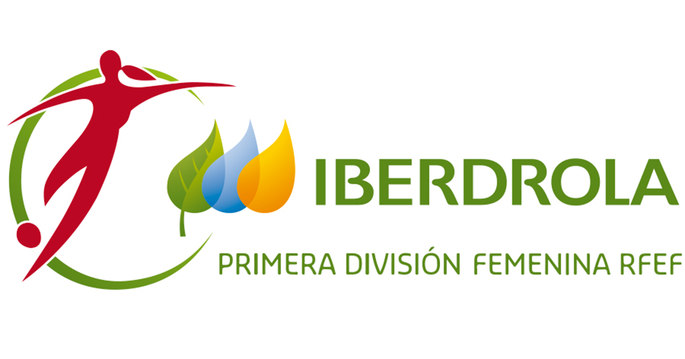
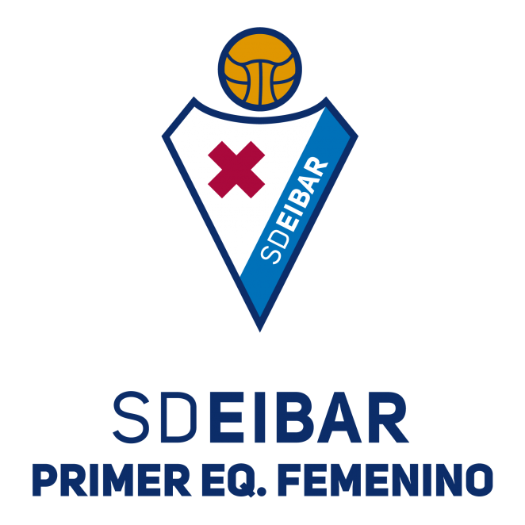
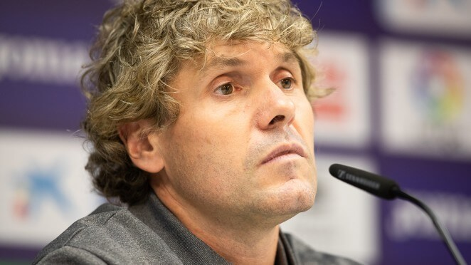
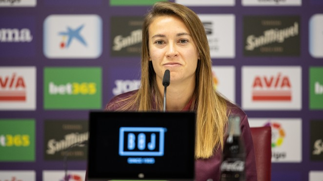
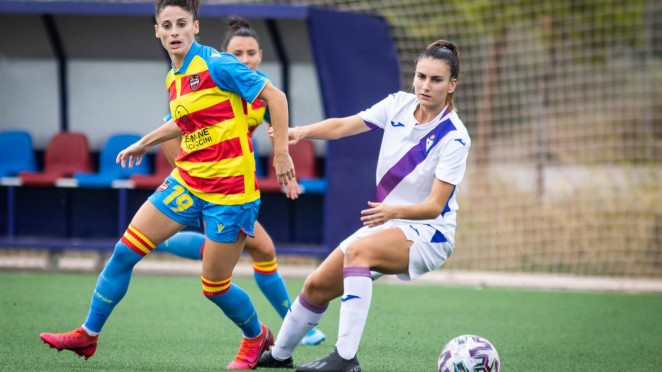
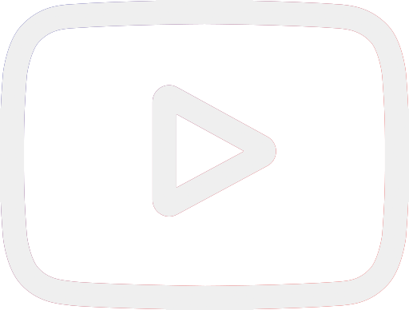

<!DOCTYPE html>
<html lang="es"></html>
<head>
    <meta charset="UTF-8">
    <meta name="viewport" content="width=device-width, initial-scale 1.0">
    <meta name="author" content="Aina Muñoz Fernández">
    <meta name="generator" content="Visual Studio Code">
    <meta name="description" content="Página principal de la web oficial del Eibar FC Femenino">
    <meta name="keywords" content="fútbol femenino liga iberdrola ">
    <title>Web Oficial del equipo de fútbol Eibar Femenino</title>
</head>

<body>
    <div class="headIberdrola">
        <header>
            <h1>SD Eibar Femenino </h1>        
        </header>
        <!--imagen liga iberdrola-->
        
    </div>

    <nav class="uppernav">
        <!--Menú de navegación de classificacion / resultados /galeria-->
        <a href="./web/classif.html">Clasificación</a> |
        <a href="./web/resultats.html">Resultados</a> |
        <a href="./web/galeria.html">Galeria</a> 
    </nav>
    <main>
        <!--Cuerpo principal de la página-->
        <article>
            <section>
                <!--imagen escudo eibar-->
                
               
            </section>
            <section>
                <!--menú navegación info general y planté-->
                <nav id="navindex">
                    <ul>
                        <li><a href="./web/infogeneral.html">Información general</a></li> 
                        <li><a href="./web/planter.html">Plantilla</a></li> 
                        <li><a href="./web/enquesta.html">Encuesta valoración</a></li>
                    </ul>
                </nav>

            </section>

        </article>
        <aside>
            <!--ultimes noticies-->
            <div class="news"> <a href=""> <h4>IKER DORRONSORO: "LA FUERZA DEL EQUIPO ESTÁ EN EL TRABAJO QUE HACE"</h4> </a>
                
                <h6>16/10/2020</h6>
                <h5>El técnico armero destaca "la verticalidad" del Madrid CFF</h5>
            </div>
            <div class="news"> <a href=""> <h4>CARLA MORERA: “NOS HEMOS DEMOSTRADO A NOSOTRAS MISMAS QUE SOMOS CAPACES”</h4> </a>
                 
                <h6>08/10/2020</h6>
                <h5>A la jugadora armera no le sorprende el nivel demostrado por el equipo</h5>
            </div>
            <div class="news"> <a href=""> <h4>EL EIBAR CONSIGUE UN MERITORIO EMPATE ANTE EL LEVANTE</h4> </a>
                
                <h6>08/10/2020</h6>
                <h5>El equipo demuestra su potencial y concentración</h5>
            </div>

        </aside>
        
    </main>

</body>

<footer>
    <!--aquí va tema copyright + info contacto + redes sociales-->
    <!--esta lista tendrá que ir inline-->
    <ul class="contact"> 
        <li>&copy; SD Eibar FC Femenino</li>
        <li><address>Ipurua Kalea 2, 20600 Eibar (Gipuzkoa)</address></li>
        <li>Telf. 943 201 831</li>
        <li>Fax. 943 202 606</li>
        <li><a href="https://www.instagram.com/sdeibar/?hl=es" target="_blank">
            
        </a></li>
        <li><a href="https://www.facebook.com/sdeibar/" target="_blank">
            
        </a></li>
        <li><a href="https://twitter.com/SDEibar" target="_blank">
            
        </a></li>
        <li><a href="https://www.youtube.com/channel/UClHd-P6Bfkm1dlUkMdkTemg" target="_blank">
            
        </a> </li>
      </ul> 
     
</footer>

